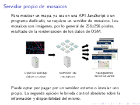
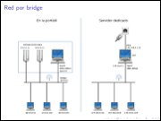
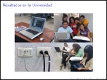
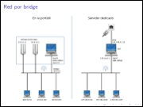
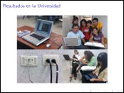
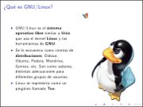
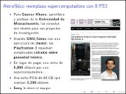
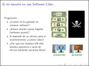

Movimiento Libre
Colección de ideas.
Presentaciones
OpenStreetMap
2014-01-19 20:00 - guivaloz


El pasado 14 de diciembre de 2013 expuse en el Grupo de Usuarios de GNU/Linux de la Laguna el tema OpenStreetMap. De éste material extraigo estos apuntes:
Distribuciones GNU/Linux, entornos y programas libres
2010-10-19 23:55 - guivaloz

Para el XX Semana Académica en la Universidad Autónoma de Coahuila su servidor elaboró esta amena y visual presentación sobre las distribuciones GNU/Linux y los entornos de escritorio más populares.
Descargar
Virtualización con QEmu
2009-11-28 23:00 - guivaloz
  
 
Con motivo del Congreso Iberoamericano FOSS 2009 que organiza la Universidad Autónoma de Zacatecas he elaborado la conferencia Virtualización con QEmu.
En este material se ilustra de forma sencilla cómo se usa el virtualizador QEmu y cómo lo he usado en la impartición de clases de GNU/Linux en la Universidad Tecnológica de Torreón.
Descargar
Taller de Ruby Básico
2009-11-22 23:55 - guivaloz


Para el Foro Académico Regional 2009 en el Instituto Tecnológico de la Laguna su servidor impartió un Taller Básico de Ruby. Los asistentes conocieron y practicaron las bases de este relativamente nuevo lenguaje de programación que promete un gran futuro.
Descargar
Edubuntu en la educación
2009-10-28 01:00 - guivaloz
  
Para la 16va. Semana Nacional de Ciencia y Tecnología en un evento organizado por el COECYT de Coahuila representando a InnovaTIC y al GULAG, elaboré la presentación “Edubuntu en la educación”.
Este material es una semblanza de lo que es el Software Libre, Ubuntu y Edubuntu, haciendo énfasis en su aplicación para el ámbito educativo. Se le hace la pregunta al público de que si sabe cuánto se gasta por comprar software privativo, si sabe que se estén usando copias ilegales del mismo y si es justo que sólo se enseñe una alternativa comercial habiendo otras libres. Concluye reflexionando sobre el potencial de la Comarca Lagunera para integrarse a las Industrias de la Información y Comunicación.
Descargar
- 1 (current)
- 2
- 3
- 4
- »